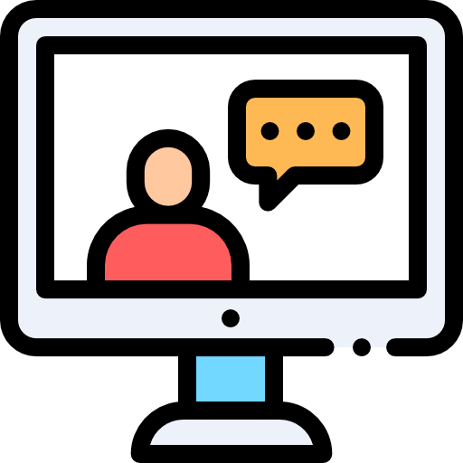

Taking care of your mental health
We all experience stressful times during our PhD which can be fueled by failure from non-working experiments, guilt if we do take breaks, jealousy if everyone around us seems to be achieving amazing things or by being overwhelmed when we don’t set proper boundaries with our boss or colleagues. To prepare yourself for stressful times and also relieve acute stress there are some coping strategies you can try:
Focus on you
This is an important one. It's a fact that lack of sleep can add to the feelings of stress, so take some time to get a proper night’s sleep. If you have trouble sleeping, you might want to try some evidence based sleeping tips like disconnecting from electronic devices. Taking a break and walking in our beautiful Buch campus or enjoying a coffee on the BIMSB terrace can have a positive impact on your stressful days. Do something you are really passionate about! Find your own activities that bring your energy level back up and do them routinely and seriously, like sports, meditation or any personal project you might have. Try to be efficient during working hours to make time for your hobbies!
|
|
|
|
Take some time out
Taking vacation can improve your efficiency when you come back to work. We in the MDC are lucky to have the right to 30 vacation days - be aware that you are legally entitled to spend them and your boss cannot deny vacation repeatedly. If you can´t take a couple of weeks off at once, take a series of long weekends. And make sure you properly take those days off and try to stay off work emails too.
It is easy for us to think that our projects won't advance when we go on vacation, which can affect our career in the long run. However, consistent good quality science is not easy to achieve if we are not in a good mental headspace, tired, distressed, anxious, sick or even depressed. Take care of yourself first, then your project can fly.
|
Keep in touch with friends and family
Strong family and friend relationships are essential to make us feel included and cared for. They can offer us different perspectives on our internal worries and anxieties. They help keep us grounded and also can help to solve practical problems. Explore and find your own lines of communication, online can be enough, but sometimes face to face is required. Focus more energy on relationships that make you feel loved and valued. If being around someone damages your mental health, it may be the best to take a break. Make friends on campus by visiting the Beer hour, or coming to our PhD rep events.
|

|
|
|
Talk about it
Remember: talking about your feelings isn’t a weakness, but a strength. It is part of taking charge of your well-being and doing everything you can to stay healthy. It might be awkward at first, but it is worth exploring, check out these tips for a starting point.
If you have a supervisor that you trust, discuss your mental health concerns with them. You can exchange coping strategies because remember they also did a PhD once! By letting them know that focusing on mental health and personal development is important for your future (and present) you are redefining your boundaries. You can also reach out to a mentor. This can be a member of your TAC or a collaborator who has no conflicting interests with you and has time to help. When you find someone suitable, ask them to be your mentor by stating what you hope from the mentorship experience, to find the best fit. Postdocs around you survived their PhDs and developed coping strategies. You could reach out to them as well.
|
Create manageable chunks
If everything is overwhelming, try to break down your research into manageable tasks, maybe with help of your supervisor or a postdoc. Try to have weekly plans, monthly plans, yearly plans and keep an overview. Don´t worry if you can´t keep up: it is your plan and you can adapt it if you had unrealistic goals. We become better and better at setting goals during the PhD, as we master techniques and get to know ourselves and our boundaries.
|

|

|
Resources online
There are many resources online that can help us manage mental health and improve wellbeing. The charity “Mind” has a wide range of resources available, from coping strategies for everyday living to how to keep your mental health at work and how to support others. You can also find more specific graduate student focused material, collected by students at Berkley in "Thriving in Science". Mentalhealth.org is also a great resource, with tips for everyday life and lots of material.
We already pointed out the concept of mindfulness as a powerful tool to manage stress (in our previous email). Guided meditation apps are rising in popularity, such as Headspace, Simple Habit, there are also german options like Baloonapp. They provide an easy way to figure out if meditation is interesting to you.
|
We all cope with stress differently, not every piece of advice works for everyone, but we can each find some useful methods and coping strategies that work for us.
Help is available!
Want to contact the MDC counsellor (click
here and get an appointment for free!)
Next up:
Which resources are there at the MDC?